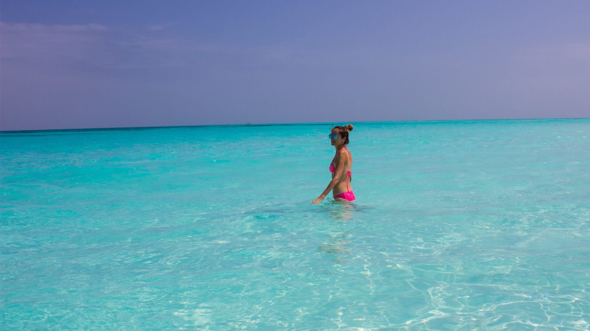
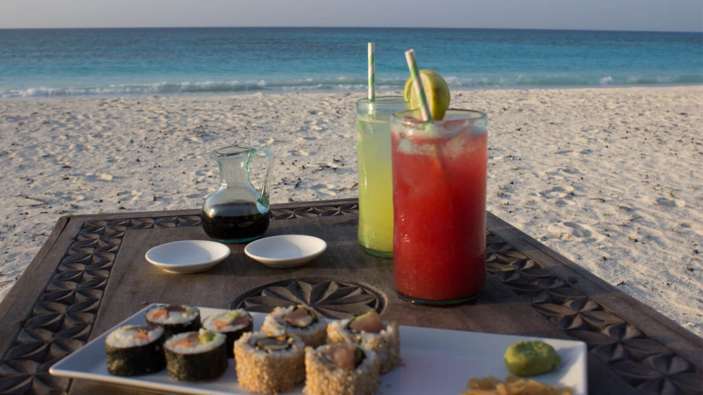
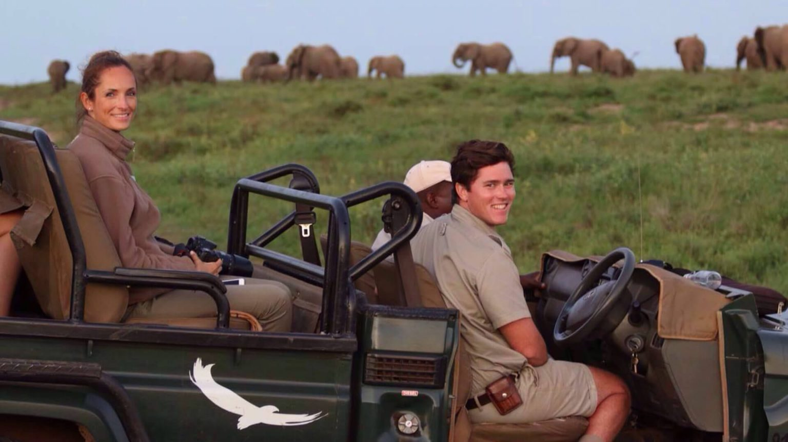

In today's tech-obsessed world, social media may be the ideal platform for armchair travellers around the world to showcase the world's beauty, but travel is about so much more than getting that perfect Instagram shot. Travel should have a purpose. It should excite and inspire you, refresh and ground you, educate and challenge you, and most importantly, humble you.
Travel provides us with our most memorable stories, most treasured memories, and countless irreplaceable lessons that we can choose to pass on to others. It teaches us about ourselves and each other, broadens our horizons, and forces us to refocus on what truly matters, much like a reset button.
Travel gives us our most memorable stories, our most treasured memories, and countless irreplaceable lessons that we can choose to pass on to others. It, like a reset button, teaches us about ourselves and each other, broadens our horizons, and forces us to refocus on what truly matters.
Travel is the best way to immerse yourself in geography, history, culture, gastronomy, languages, biology, and anything else you can think of. Travel broadens the mind and educates us in ways that no textbook or travel guide can. Curious travellers not only learn about different landscapes, languages, and lifestyles; they also learn fascinating facts while observing wild animals in their natural habitat; they delve into a region's history and taste the local flavours; and they learn about themselves (and each other) along the way.
Travel to escape reality

Every now and then, we all need to drop below the radar and escape reality. We can enjoy complete anonymity in new and unexplored territories when we travel. It gives us complete freedom to live in the moment and to be anyone, go anywhere, and do anything. The freedom of being able to wake up and pick a spot anywhere on the map and find a way to get there was the best part of my six-month trip around the world back then. Travel allows us to be more spontaneous and seek out new experiences.
Travel to eat

A diet is not something you'll find on a packing list. Keep it at home! Bring a healthy appetite and an open mind to try new flavours and sample all of the local delicacies. Remember that mimosas are perfectly fine for breakfast, and dessert is always a good idea. Indulge, then go back for seconds, and then exercise when you get home.
Travel to be transformed

Don't just travel for the sake of travelling. Travel in search of adventure and a sense of aliveness. Participate in authentic experiences that will not only alter your perspective of the world, but will also encourage self-reflection, environmental awareness, and global action to help protect and conserve our planet.